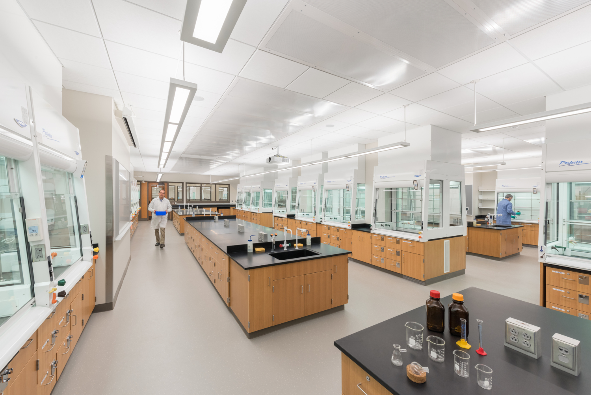
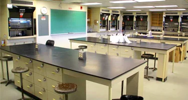
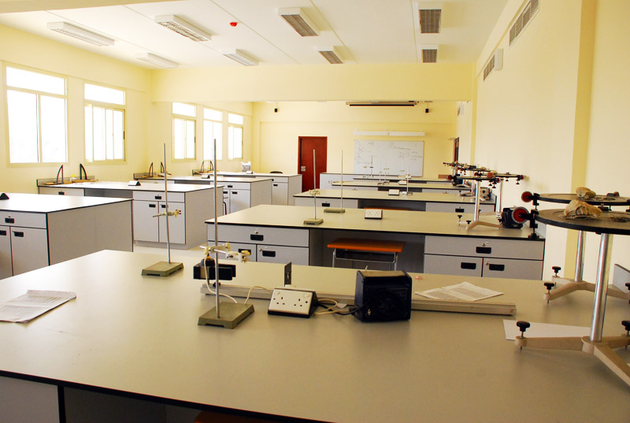
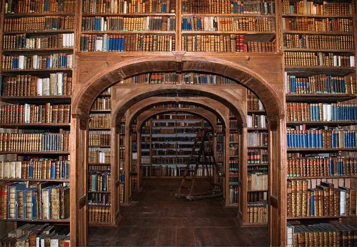

What can we do for you?
At study night we have all the services you could ever need when you work. There’s a lab for Chemistry, Biology and Physics that each offer experienced trusted teachers that work at Marist college, a space for students to study without teachers and a Relaxation Station. The Relaxation Station and the Student Study Space offers staff services in the form of waiters and waitresses that will offer drinks including tea, hot chocolate and coffee*. In the Student Study Space there is a small library where students can borrow books (they must be returned at the end of each session) and there is guided meditation with more hot drinks on offer.
We don’t provide full lessons online but we do provide lesson notes, this is due to the fact that the classes cost money and it wouldn’t be fair on teachers and staff who need to be paid if we gave free lessons online. Bring your own device and headphones if you want
*Coffee is only available before 1pm
Here’s what to expect from each of the rooms:
Chemistry:

Your chemistry teacher is Mr Hassan, he’s been teaching Chemistry at Marist college for many years now. In this class you’ll be learning about atoms and chemical reactions.
Biology:

Your biology teacher is Dr Evans, she has also been teaching at Marist college for a while. In this class you’ll be learning about the circulatory system and genetics.
Physics:

Your final teacher is Mr Purdy, like the past two teachers he is also very experienced, while physics isn’t his main strength he is still a very good teacher. In this class you’ll learn about forces and electricity.
Student Study Space:

This is the largest room we have and it’s a space where students can work without teachers, and is not a lesson so it’s much cheaper for students to use this space. Around every hour and a half our staff will come up to you and ask if you need a drink of water, hot chocolate, tea or coffee and will provide you with what you need (don’t be shy!) You can borrow books here and they must be returned before you leave. If you need anything be sure to talk to the staff and we’ll see what we can do for you!
Relaxation Station:
We offer two different services for guided meditation in the Relaxation Station, these include humans and headspace. When there is a shortage of human staff to offer meditation we provide headspace’s meditation instead, if meditation isn’t your thing you could nap instead or if you need to or talk to someone we have friendly staff you can approach. Just like the Student Study Space staff will come around and offer you a drink every so often.